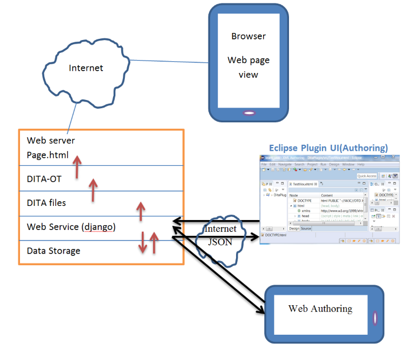
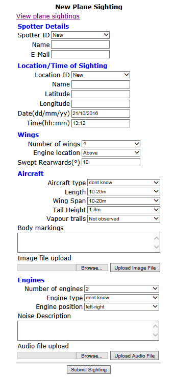
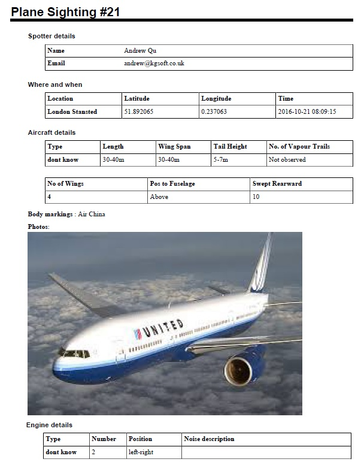

<link rel="import" href="../bower_components/polymer/polymer.html">
<link rel="import" href="copy-right.html">
<link rel="import" href="shared-styles.html">
<link rel="import" href="blg-title.html">
<link rel="import" href="blg-desc.html">
<link rel="import" href="sec-title.html">

<dom-module id="my-2016_10_06_prg">
    <template>
        <style include="shared-styles">
            :host {
                display: block;
                padding: 5px;
            }
        </style>

        <blg-title title="Plane Spotters Web Page - Demo Using DITA Publishing Standards">
        </blg-title>
        <blg-desc>In this post, I am trying something new with DITA
            (Darwin Information Typing Architecture) standards.
            This simplistically illustrates one way of publishing web
            pages using DITA. The project consists an Eclipse plugin
            for UI, a web server for web services, content management,
            DITA-OT for web page publishing.
        </blg-desc>

<sec-title>Project Architecture</sec-title>
<p>The following sketch shows the project architecture:</p>

<p>
<b>Eclipse plugin</b> is the authoring frontend that provides UI for viewing/editing data where the plane spotter can
enter data of a new sighting of planes. Information on previous sightings may also be viewed or searched. The plugin talks
to the cloud server using web services to store/retrieve data.
</p>
<p><b>Browser view</b> is the publishing end of the project where plane sightings are published to plane spotting
enthusiasts and the general public.</p>
<p><b>The cloud server</b> consists of data management, web services, DITA-OT and the web server that serves web pages.
The web services module is the key component of the project that coordinates all activities on the server. It sends
data to Eclipse plugin on request. When new or modified data is received from Eclipse plugin, the data is
stored / refreshed, DITA files generated or regenerated, DITA-OT is called to generate / regenerate static
web pages. The web sever handles web service / web page requests.
</p>
<sec-title>Project Data Modelling</sec-title>
<p>The following is the (simplified) sample data model for our project.</p>
<pre>
Sighting
   |--- Spotter ID, default guest
   |--- Date/Time, default current time
   |--- Location
   |      |--- Landmark name
   |      |--- Longitude, latitude
   |--- Engines
   |      |--- Type
   |      |--- Number of
   |      |--- Positions
   |      |--- Distinctive noise
   |      |      |--- Description
   |      |      |--- Audio recordings
   |--- Number of vapour trails it is leaving
   |--- Size of aircraft
   |      |--- Estimated length (range in metres)
   |      |--- Wing span (range in meters)
   |      |--- Tail height (range in meters)
   |--- Wings
   |      |--- Number of
   |      |--- Position relative to the fuselage: above, below, fixed at midpoint
   |      |--- Degrees swept rearwards
   |--- Markings on aircraft
   |--- Photoes
</pre>

<sec-title>Django Models</sec-title>
<p>Project data model expressed using django.</p>
<pre>
from __future__ import unicode_literals
from django.db import models
from django.db import models
import os.path

APP_ROOT = os.path.abspath(os.path.dirname(__file__))

class Sighting(models.Model) :
   id = models.AutoField(primary_key=True)
   spotter = models.ForeignKey('Spotter', on_delete=models.PROTECT, default=1)
   location = models.ForeignKey('Location', on_delete=models.PROTECT, default=1)
   time = models.DateTimeField('Time of sighting', auto_now=True)
   nvp = models.IntegerField("Number of vapour trails", default=1)
   aircraft = models.ForeignKey('Aircraft', on_delete=models.PROTECT)
   markings = models.CharField(max_length=4096) # description of any markings on plane
   photos = models.CharField(max_length=4096) # img1;img2;...

   def __unicode__(self):
      return str(self.spotter) + " " + str(self.time) + " " + str(self.location)

## Choice of engine and aircraft types are read from static files
def GetTypeChoice(type_type) :
   fpath = os.path.join(APP_ROOT, "static", type_type + ".cat")
   try:
      fcat = open(fpath)
      cat = ()
      i = 0
      for line in fcat :
         line = line.strip()
         if len(line) > 0 and line[0] != '#' :
            cat = cat + ((line, line),)
      return cat
   except IOError:
      return (('err', 'Error'),)

class Aircraft(models.Model) :
   id = models.AutoField(primary_key=True)
   type = models.CharField(max_length=25, choices=GetTypeChoice('aircraft'), default="unknown")
   engine = models.ForeignKey('Engine', on_delete=models.PROTECT, default=1)
   size = models.ForeignKey('Size', on_delete=models.PROTECT)
   wing = models.ForeignKey('Wing', on_delete=models.PROTECT)

   def __unicode__(self):
      return self.type + " " + str(self.wing) + " " + str(self.size)

class Engine(models.Model) :
   ENGINE_POSITION = (
      ('12', 'left-right'),
      ('1L', 'left'),
      ('1R', 'right'),
      ('1C', 'center'),
      ('123', 'left-cen-right'),
      ('1234', 'left-left-right-right'),
      ('123456','left-left-cen-cen-right-right'),
      ('other', 'other')
                      )
   type = models.CharField(max_length=25, choices=GetTypeChoice('engine'), default="unknown")
   number = models.IntegerField('Number of engines', default=1)
   positions = models.CharField(max_length=60, choices=ENGINE_POSITION)
   noise_desc = models.CharField(max_length=500, blank=True)
   noise_audio = models.CharField(max_length=1024) # wav1;wav2,...

   def __unicode__(self):
      return self.type + "x" + str(self.number) + " " + self.positions
   def Numebr(self) : return str(self.number)
   def Position(self) :
         for pos_op in Engine.ENGINE_POSITION :
               if pos_op[0] == self.positions : return pos_op[1]
         return ""

class Size(models.Model) :
   LENGTH_CHOICE = (
      ('1', '1-3m'),
      ('3', '3-5m'),
      ('5', '5-7m'),
      ('7', '7-10m'),
      ('10', '10-20m'),
      ('20', '20-30m'),
      ('30', '30-40m'),
      ('40', '40-50m'),
      ('50', '50-60m'),
      ('60', '60-70m'),
      ('70', '70-80m'),
      ('80', '80-90m'),
      ('90', '90-100m'),
      ('99', '> 100m')
   )
   length = models.CharField('Length', max_length=3, choices=LENGTH_CHOICE)
   wingspan = models.CharField('Wing Span', max_length=3, choices=LENGTH_CHOICE)
   tailheight = models.CharField('Tail Height', max_length=3, choices=LENGTH_CHOICE)

   def __unicode__(self):
      return "Length: " + self.length + " Wing span: " + self.wingspan + " Tail height: " + self.tailheight

   def length_desc(self, lenid) :
         for lenop in Size.LENGTH_CHOICE :
               if lenop[0] == lenid : return lenop[1]
         return ""
   def Length(self) : return self.length_desc(self.length)
   def WingSpan(self) : return self.length_desc(self.wingspan)
   def TailHeight(self): return self.length_desc(self.tailheight)

class Wing(models.Model) :
   LocationChoice = (('A', 'Above'), ('B', 'Below'), ('M','Fixed at mid-point'))
   number = models.IntegerField("Number of wings", default=2)
   position = models.CharField("Fuselage position", max_length=3, choices=LocationChoice)
   swept = models.IntegerField("Swept Rearwards (degrees)", default=10)

   def NumberOfWings() :
      return number

   def __unicode__(self):
      return "Wing # " + str(self.number) + " Engine pos:" + self.position + " Swept:" + str(self.swept)
   def Number(self) : return str(self.number)
   def Position(self) :
         for lc in Wing.LocationChoice :
               if lc[0] == self.position : return lc[1]
         return ""
   def Swept(self) : return str(self.swept)
          

class Spotter(models.Model) :
   spotter_id = models.AutoField(primary_key=True)
   name = models.CharField(max_length=60)
   email = models.CharField(max_length=80)

   def __unicode__(self):
      return "" + str(self.spotter_id) + "-" + self.name + "-" + self.email

class Location(models.Model) :
   location_id = models.AutoField(primary_key=True)
   name = models.CharField(max_length=120)
   latitude = models.FloatField(default=0)
   longitude = models.FloatField(default=0)

   def __unicode__(self):
      return self.name + "(lat:" + str(self.latitude) + ", long:" + str(self.longitude) + ")"
</pre>
<br />
<sec-title>Web interface to add a sighting</sec-title>
<p>templates/add.html</p>
<pre>
&lt;html&gt;
{% load static %}
&lt;head&gt;&lt;title&gt;Add a New Sighting&lt;/title&gt;
&lt;/head&gt;
&lt;body style='font-family:verdana;' onload="sightingPageLoaded()"&gt;
&lt;table style="margin-left:auto; margin-right:auto;" &gt;
&lt;tr&gt;&lt;th&gt;New Plane Sighting&lt;/th&gt;&lt;/tr&gt;
&lt;tr&gt;&lt;td&gt;&lt;a href='/static/all.html'&gt;View plane sightings&lt;/a&gt;&lt;/td&gt;&lt;/tr&gt;
&lt;tr&gt;&lt;td&gt;&lt;table&gt;
   &lt;tr&gt;&lt;th colspan='3' class='lalign_th'&gt;Spotter Details&lt;/th&gt;&lt;/tr&gt;
   &lt;tr&gt;&lt;td&gt;Spotter ID&lt;/td&gt;&lt;td&gt;&lt;select id='spotterId' onchange="spotterIdChanged();" style="width:100%"&gt;
      &lt;option value='0'&gt;New&lt;/option&gt;
      {% for spotter in spotters %}
         &lt;option value='{{spotter.spotter_id}}'&gt;{{ spotter.spotter_id }} - {{ spotter.name }}&lt;/option&gt;
      {% endfor %}
      &lt;/select&gt;
   &lt;/td&gt;&lt;td&gt;&lt;/td&gt;&lt;/tr&gt;
   &lt;tr&gt;&lt;td class='ralign'&gt;Name&lt;/td&gt;&lt;td&gt; &lt;input id='spotterName' type='text' style="width:100%" /&gt;&lt;/td&gt;
      &lt;td class='redcross' id='valid_spotterName'&gt;&lt;/td&gt; &lt;/tr&gt;
   &lt;tr&gt;&lt;td class='ralign'&gt;E-Mail&lt;/td&gt;&lt;td&gt; &lt;input id='spotterEmail' type='text' style="width:100%" /&gt;&lt;/td&gt;
      &lt;td class='redcross' id='valid_spotterEmail'&gt;&lt;/td&gt; &lt;/tr&gt;
&lt;/table&gt;&lt;/td&gt;&lt;/tr&gt;
....
&lt;/body&gt;
&lt;/html&gt;
</pre>
The above only shows the code for "Spotter" table. The template has input parameters :: spotters, locations, engLocChoice, sizeChoice, engineTypes
  enginePos, aircraftTypes. The web UI is shown in the following picture:<br />

<br />
<br />
<sec-title>Generateing DITA files</sec-title>
<p>When a sighting is submitted, it is saved to database first. Then
    a dita xml file is saved. After that, the DITA-OT tool is run to generate
    pdf files. Finally, the sightings ditamap file is modified to add
    the new sighting, from which, the html5 files are generated using DITA-OT.
    The html files consist index.html and 1 html file for each sighting. The index.html
    file links to individual html file and pdf file for each sighting. 
</p>
<p>Code for saving a dita table
</p>
<pre>
# colwid[] - list of column width, can be empty [], but not None
# headrow[] - list of table head row. Can be empty [], but not None      
def writeDitaTable(fdita, colwid, col_sep, headrow, rows, indent) :
   colsep = ' colsep="1"' if col_sep else ''
   fdita.write(indent + '&lt;table frame="all" rowheader="firstcol" rowsep="1"' + colsep + '&gt;\n')
   nclms = len(rows[0])
   indent = indent + "   "
   fdita.write(indent + '&lt;tgroup cols="' + str(nclms) + '"&gt;\n')
   indent = indent + "   "
   for i, w in enumerate(colwid) :
      fdita.write(indent + '&lt;colspec colname="CLM' + str(i) + '" colwidth="' + w + '"/&gt;\n')
   if len(headrow) &gt; 0 :
         fdita.write(indent + '&lt;thead&gt;&lt;row&gt;\n')
         indent = indent + "   "
         for h in headrow :
               fdita.write(indent + '&lt;entry&gt;' + h + '&lt;/entry&gt;\n')
         indent = indent[:len(indent) - 3]
         fdita.write(indent + '&lt;/row&gt;&lt;/thead&gt;\n')
   fdita.write(indent + '&lt;tbody&gt;\n')
   indent = indent + "   "
   for r in rows :
         fdita.write(indent + '&lt;row&gt;\n')
         indent = indent + "   "
         for clm in r :
               fdita.write(indent + '&lt;entry&gt;' + clm + '&lt;/entry&gt;\n')
         indent = indent[:len(indent) - 3]
         fdita.write(indent + '&lt;/row&gt;\n')
   indent = indent[:len(indent) - 3]  
   fdita.write(indent + '&lt;/tbody&gt;\n')         
   indent = indent[:len(indent) - 6]  
   fdita.write(indent + '&lt;/tgroup&gt;&lt;/table&gt;\n')
</pre>
Example of a DITA file for a plane sighting:
<pre>
&lt;?xml version="1.0" encoding="utf-8"?&gt;
&lt;!DOCTYPE reference PUBLIC "-//OASIS//DTD DITA Reference//EN" "reference.dtd"&gt;
&lt;reference id="sighting_1"&gt;
&lt;title&gt;Plane Sighting #1&lt;/title&gt;
&lt;refbody&gt;
   &lt;section&gt;
      &lt;title&gt;Spotter details&lt;/title&gt;
      &lt;table frame="all" rowheader="firstcol" rowsep="1"&gt;
         &lt;tgroup cols="2"&gt;
            &lt;colspec colname="CLM0" colwidth="25*"/&gt;
            &lt;colspec colname="CLM1" colwidth="75*"/&gt;
            &lt;tbody&gt;
               &lt;row&gt;
                  &lt;entry&gt;Name&lt;/entry&gt;
                  &lt;entry&gt;Andrew Qu&lt;/entry&gt;
               &lt;/row&gt;
               &lt;row&gt;
                  &lt;entry&gt;Email&lt;/entry&gt;
                  &lt;entry&gt;andrew@kgsoft.co.uk&lt;/entry&gt;
               &lt;/row&gt;
            &lt;/tbody&gt;
      &lt;/tgroup&gt;&lt;/table&gt;
   &lt;/section&gt;
   ......
&lt;/refbody&gt;
&lt;/reference&gt;
</pre>
DITA-OT commands to convert dita doc to html/pdf files:
<pre>
dita -i dita.xml -o out_dir -f html5 / pdf
</pre>
Example of ditamap file :
<pre>
&lt;?xml version="1.0" encoding="utf-8"?&gt;
&lt;!DOCTYPE map PUBLIC "-//OASIS//DTD DITA Map//EN" "map.dtd"&gt;
&lt;map title="Plane Sightings"&gt;
   &lt;topicref href="sighting_1.xml" type="reference"&gt;&lt;/topicref&gt;
   &lt;topicref href="sighting_2.xml" type="reference"&gt;&lt;/topicref&gt;
   &lt;topicref href="sighting_3.xml" type="reference"&gt;&lt;/topicref&gt;
   &lt;topicref href="sighting_4.xml" type="reference"&gt;&lt;/topicref&gt;
   ...........
&lt;/map&gt;
</pre>
DITA-OT commands to convert dita map file to html/pdf files:
<pre>
dita -i some_book.ditamap -o out_dir -f html5 / pdf
</pre>
PDF file (image) from DITA processing : <br />

<br />
<br />
Visit live web at <a href='http://www.kgsoft.co.uk:8000/sighting/add'>Plane spotters web site (demo)</a>
<br />
<br />        

        <copy-right></copy-right>
    </template>
    <script>
        Polymer({
            is: 'my-2016_10_06_prg',
        });
    </script>
</dom-module>
